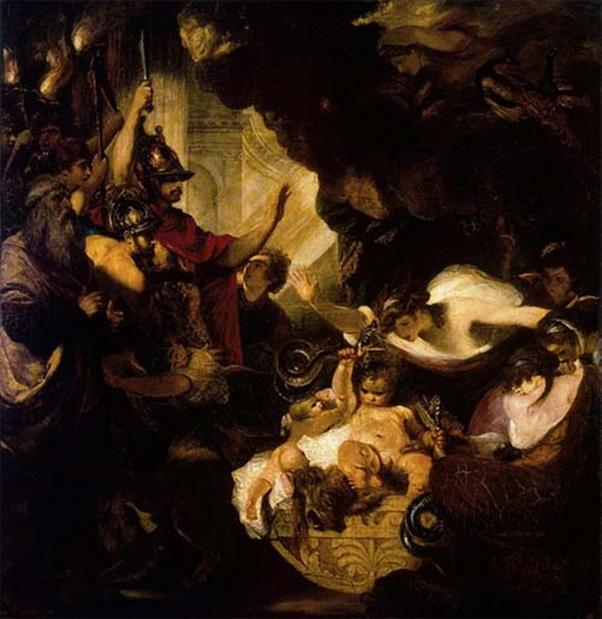

Theo thường lệ sau khi con ngủ thì Alcmène đặt Héraclès và Iphiclès nằm chung trong một cái nôi. Nửa đêm hôm đó nữ thần Héra phái hai con rắn xuống để quấn chết chú bé. Hai con rắn lọt vào buồng và trườn lên chiếc nôi, bò lách vào người hai chú bé: Iphiclès khóc thét lên. Thấy động, Alcmène tỉnh dậy. Trông thấy hai con rắn đang bò lổm ngổm trong nôi của hai đứa con mình nàng sợ hãi thét lên, hô hoán ầm ĩ. Mọi người tay đèn tay đuốc chạy đến thì thấy một cảnh tượng kỳ lạ: chú bé Héraclès ngồi trên nôi, hai tay bóp cổ hai con rắn. Còn hai con rắn thì quằn quại giãy chết. Lúc này Héraclès mới mười tháng tuổi.

Thấy con trai mười tháng mà tính cũng có, tướng cũng có, Amphitryon cho mời nhà tiên tri Tirésias tới để đoán số mệnh. Nhà tiên tri cho biết, sau này Héraclès sẽ lập được những chiến công vô cùng rực rỡ, sẽ được các vị thần Olympe cho gia nhập thế giới thiên đình. Amphitryon và Alcmène rất vui mừng, liền cho tìm thầy, mời các anh hùng dũng sĩ về dạy con học. Héraclès học nghệ thuật điều khiển xe ngựa ở người bố dượng Amphitryon, học quyền thuật ở người anh hùng Autolycos, học nghệ thuật bắn cung ở Eurytos, học âm nhạc ở Eumolpos và Linos, học các thứ khoa học ở thần nửa người nửa ngựa Centaure Chiron. Cậu bé Héraclès học nhiều các môn như thế nhưng xem ra không phải môn học nào cũng khá cả. Cậu đặc biệt thích thú và ham mê những môn võ nghệ như quyền thuật, cưỡi ngựa, bắn cung, còn âm nhạc và những môn khoa học thì cậu rất chểnh mảng, đúng hơn phải nói là rất lười. Có một hôm thầy giáo dạy âm nhạc Linos quở trách cậu vì đã không thuộc bài. Nghe đâu hình như thầy giận quá có đánh Héraclès. Thế là Héraclès nổi nóng vớ lấy chiếc gậy đánh trả lại thầy. Ai ngờ đòn đánh mạnh quá làm thầy Linos ngã lăn ra chết. Thật là một trọng tội: một tội tày đình! Amphitryon sợ quá. Ông thấy không thể nuôi cậu con trai của thần Zeus này được. Cứ xem như khẩu khí ứng đối của Héraclès trước tòa thì đủ rõ. Vì giết thầy nên Héraclès bị đưa ra truy tố trước tòa án. Héraclès liền viện ngay một câu nói của Rhadamanthe một nhà thông thái nổi tiếng người Crète đã viết ra một bộ luật mà khắp thế giới Hy Lạp đều biết: “... Ai bị đánh bất kỳ trong trường hợp nào đều có quyền đánh lại”. Có người kể không phải Héraclès cầm ghế đánh lại thầy Linos mà là tiện tay đang cầm cây đàn cithare đập vào đầu thầy. Héraclès tuy được tòa tha bổng, song điều đó không hề làm giảm nỗi lo âu của Amphitryon. Để tránh những hậu họa sau này, Amphitryon đưa Héraclès về sống ở thôn dã với hy vọng rằng cuộc sống ở chốn quê mùa đồng nội bên đàn cừu, đàn ngựa với tiếng nhạc bay bổng, dịu dàng sẽ làm cho tâm tính Héraclès bớt sôi động đi được phần nào chăng, hơn nữa cũng có thể hợp với tính phóng khoáng của Héraclès.
Héraclès về sống ở vùng Cithéron ngày ngày đi chăn gia súc. Chàng không quên luyện tập võ nghệ côn quyền. Đặc biệt là chàng ưa luyện tập để sử dụng một cây chùy có sức nặng đến nỗi khắp vùng đó, kể cả những tay anh hùng hảo hán chưa từng ai dám sử dụng. Cứ thế Héraclès lớn lên và có một sức khỏe khác thường. Mười tám tuổi chàng đã cao hơn bốn trượng. Thân hình chàng nở nang, rắn rỏi và cân đối, đều đặn một cách tuyệt diệu khiến ai trông thấy cũng phải ngợi khen.
Hồi đó ở trên rừng vùng Cithéron đất Thèbes có một con sư tử to lớn và hung dữ. Con vật này thường lần về bắt dê, cừu của Amphitryon và của nhà vua Thespios ở xứ Thespies thuộc vùng Béotie bên cạnh. Không thể tính ra số gia súc đã bị thiệt hại là bao nhiêu, chỉ biết từ ngày con sư tử đó lần về kiếm ăn ở vùng này thì đàn gia súc của hai nhà vua vãn đi trông thấy. Những người đi săn chẳng ai dám nghĩ đến việc trị nó cả, vì lẽ nó to lớn quá mức. Héraclès xin đi mặc dù lúc này mới có mười tám tuổi. Suốt bốn mươi chín ngày săn tìm con ác thú đến ngày thứ năm mươi chàng mới hạ được, và mang xác nó về. Vua Thespios vô cùng mừng rỡ. Để bày tỏ tấm lòng ưu ái đối với người anh hùng trẻ tuổi, nhà vua đã gả con gái cho Héraclès. Nhưng không phải chỉ gả cho chàng một người con gái mà gả cho chàng tất cả năm mươi cô con gái. Héraclès phải làm năm mươi lễ cưới trong suốt năm mươi ngày. Từ những cuộc hôn nhân này ra đời con đàn cháu đống nhiều không kể xiết.
Sau chiến công này, Héraclès còn làm một việc vô cùng có ích cho nhân dân thành Thèbes. Chàng xóa bỏ cho nhân dân Thèbes khỏi một khoản cống nạp nặng nề. Nguồn gốc của khoản cống nạp này như sau: Trong một ngày hội tế thần Poséidon, một cỗ xe của người Thèbes không may đè chết Clyménos, vua của những người Myniens thuộc đô thành Orchomène. Con trai của nhà vua tên là Erginos nổi giận kéo quân sang đánh thành Thèbes để trả thù. Thành Thèbes yếu thế phải cầu hòa với điều kiện mỗi năm cống nạp một trăm con bò. Và phải cống nạp như thế trong hai mươi năm liền.
Héraclès một hôm bắt gặp trên đường đoàn quan quân của đô thành Orchomène sang Thèbes đòi cống vật. Biết chuyện, Héraclès nổi giận, xông vào đánh đám quan quân một trận thừa sống thiếu chết. Chàng cắt tay, xẻo mũi chúng rồi xâu vào một cái dây đeo vào cổ chúng và ra lệnh cho chúng phải cuốn xéo ngay khỏi xứ sở này. Erginos căm tức, kéo đại quân sang trị tội thành Thèbes. Nhưng lần này dưới sự thống lãnh của Héraclès, quan quân thành Thèbes đã chiến thắng oanh liệt. Erginos bị Héraclès giết chết tại trận. Tuy nhiên, Héraclès cũng bị một tổn thất to lớn. Amphitryon, bố dượng của chàng trong cuộc chiến đấu đã bị tử thương. Còn đô thành Orchomène do bị thất trận, từ nay phải chịu một khoản cống nặng gấp đôi cái khoản mà họ đã từng bắt Thèbes gánh chịu hàng năm. Người sung sướng nhất là vua Créon, cai quản thành Thèbes. Để đền ơn người anh hùng xuất chúng, nhà vua gả công chúa Mégare cho chàng.
Cuộc sống của đôi vợ chồng Héraclès và Mégare trôi đi trong tình yêu và hạnh phúc. Mégare là người đàn bà hiền hậu và xinh xắn. Nàng ăn ở với Héraclès hòa thuận và sinh được tám người con. Song bỗng một ngày kia từ đâu đưa đến một tai họa vô cùng khủng khiếp cho gia đình này. Héraclès tự nhiên phát điên, một cơn điên quái gở mà từ xưa đến nay chàng chưa bao giờ mắc phải. Chàng ôm đầu gầm rú, trợn mắt trừng trừng, bọt mép sùi ra nom như một con thú, chạy khắp đó đây. Chàng vớ lấy dao đâm chết cả vợ lẫn con. Cả đến mấy đứa cháu, con của Iphiclès, em chàng, cũng không thoát chết. Khi tỉnh lại, Héraclès vô cùng sợ hãi trước tội lỗi của mình. Hỏi ra thì được lời sấm phán truyền cho biết: đó là Héra trả thù. Nàng vẫn thù ghét đứa con riêng của thần Zeus, tuy Zeus đã cam kết với nàng để cho Héraclès làm đầy tớ cho Eurysthée mười hai năm. Có người kể, Mégare không bị Héraclès giết chết. Nữ thần Athéna được Zeus trao cho đặc trách bảo hộ cho Héraclès, đã kịp thời làm Héraclès ngủ thiếp đi, do đó Mégare mới thoát chết. Người ta còn bảo, nữ thần Héra gieo tai họa đó là nhằm trừng phạt Héraclès đã không thực hiện đúng lời Zeus cam kết: đến làm đầy tớ cho Eurysthée.
Đối với Héraclès thì từ đây thôi thế là chấm hết hạnh phúc gia đình. Chàng là một tội phạm, đã làm cho gia đình tan nát. Làm thế nào để giải trừ, tẩy rửa được tội lỗi này? Héraclès chỉ còn biết đến đền thờ Delphes để xin thần Apollon ban cho những lời chỉ dẫn. Thần Apollon truyền cho chàng phải trở về quê hương Tirynthe nộp mình làm nô lệ cho Eurysthée mười hai năm. Cô đồng Pythie ở đền thờ Delphes được thần Apollon cho tiếp xúc, đã truyền đạt lại những điều thần dậy như sau:
- Hỡi Héraclès, người con quang vinh của Zeus! Ngươi hãy trở về nơi quê cha đất tổ ở Tirynthe cam chịu hầu hạ cho Eurysthée trong mười hai năm. Trong mười hai năm ấy ngươi sẽ phải trải qua mười hai thử thách lớn. Nếu ngươi vượt qua được những thử thách đó, lập được những chiến công thì danh tiếng nhà ngươi sẽ vang động đến trời xanh. Các vị thần Olympe sẽ coi nhà ngươi như một vị thượng đẳng phúc thần, ban cho nhà ngươi đặc ân, thoát khỏi số phận ngắn ngủi của người trần đoản mệnh. Nhà ngươi sẽ là một vị thần bất tử xứng đáng với vinh quang bà con của đấng phụ vương Zeus.
Héraclès nghe xong bèn lễ tạ vị thần ánh sáng có cây cung bạc rồi ra đi. Chàng tâm niệm trong lòng những lời phán bảo của thần. Từ đây, Héraclès phải dấn thân vào một cuộc đời vô cùng gian truân và biết bao thử thách.